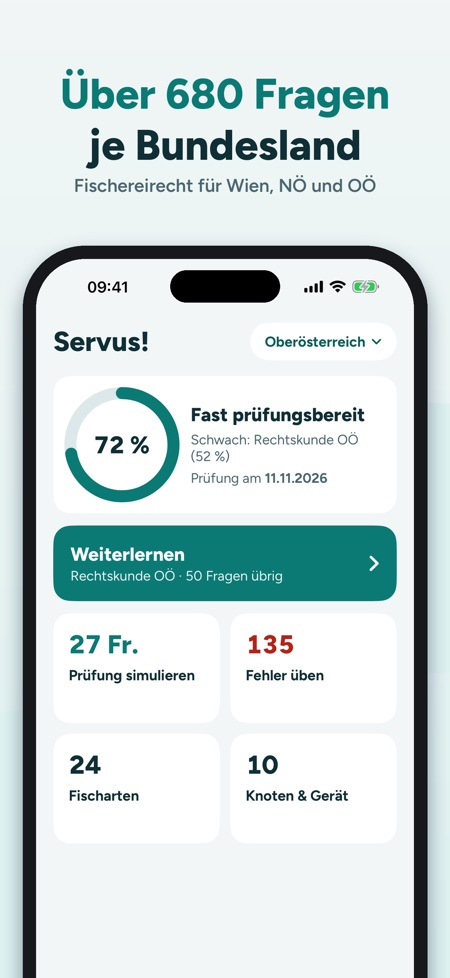

Bereite dich mit österreichischem Fischereirecht und den Fischen unserer Gewässer auf die Fischerprüfung in deinem Bundesland vor. Die App funktioniert offline.



Aktuell für Wien, Niederösterreich und Oberösterreich. Weitere Bundesländer folgen, als Nächstes Steiermark, Tirol und Salzburg.
Nein, sie enthält nur österreichisches Fischereirecht.
In Wien 50 Fragen in 120 Minuten, in Niederösterreich 20 Fragen in 30 Minuten, jeweils mit Mindestzahl pro Sachgebiet. In Oberösterreich sind es 27 Fragen, bestanden ab 60 %, angelehnt an das Prüfungsformat.
Jede Frage hat eine Erklärung und Quellenangabe, etwa Paragraphen aus dem RIS oder Links zu AGES und EU-Recht. Die Fragen sind eigene Formulierungen.
Ja, die App funktioniert offline.
Nein. 30 Fragen und eine Simulation kannst du ohne Kauf ausprobieren. Die Vollversion ist ein Einmalkauf, kein Abo, und schaltet alles für alle Bundesländer frei.
Die Regeln deines Reviers können strenger sein. Die App ist ein unabhängiges Lernangebot, Angaben ohne Gewähr.
Bereite dich auf die Fischerprüfung in deinem Bundesland vor – mit österreichischem Fischereirecht und den Fischen unserer Gewässer. Für Wien, Niederösterreich und Oberösterreich.
Wichtig: Die App enthält nur österreichisches Fischereirecht. Für die Fischerprüfung in Deutschland ist sie nicht geeignet.
LERNEN NACH SACHGEBIETEN
- Über 680 Übungsfragen je Bundesland mit Erklärung und Quellenlink
- Quellen: Rechtskunde mit Paragraph aus dem RIS, Tierschutz nach Umweltbundesamt und Tierschutz-Schlachtverordnung, Fachfragen mit Link zum Nachlesen (u. a. AGES, EU-Recht, Wikipedia)
- Fischkunde, Gewässerkunde, Gerätekunde, Rechtskunde deines Bundeslandes, Tierschutz & Waidgerechtigkeit, Fischkrankheiten, Hege & Bewirtschaftung
- Fortschritt je Sachgebiet und Prüfungsbereitschaft auf einen Blick
PRÜFUNGSSIMULATION
- Im Format deines Bundeslandes: Wien 50 Fragen in 120 Minuten, Niederösterreich 20 Fragen in 30 Minuten, je mit Mindestzahl pro Sachgebiet
- Oberösterreich: 27 Fragen, bestanden ab 60 % (angelehnt an das Prüfungsformat)
- Auflösung erst am Ende, Ergebnis je Sachgebiet
- Prüfungstermin eintragen: die Startseite zählt die Tage bis zur Prüfung
MEINE FEHLER
- Falsch beantwortete Fragen werden gesammelt und verschwinden nach zwei richtigen Antworten in Folge
FISCHARTEN, SCHONZEITEN, BRITTELMASSE
- 24 heimische Fischarten mit Erkennungsmerkmalen und eigenen Zeichnungen, von Huchen und Äsche bis Reinanke und Aalrutte
- Schonzeit und Brittelmaß deines Bundeslandes mit Paragraph und Prüfdatum, Filter „Schonzeit jetzt“ und „Geschützt“
- Fischarten-Quiz: Welcher Fisch ist das?
KNOTEN & GERÄT
- 10 Knoten und Montagen Schritt für Schritt, vom Clinchknoten bis zur Laufposenmontage
PRÜFUNGSINFO
- Der Weg vom Kurs zur Fischerkarte, Kosten und Anmeldung – mit Quellen
EINMAL KAUFEN, KEIN ABO
30 Fragen und eine Simulation kannst du ohne Kauf ausprobieren. Die Vollversion schaltet alle Fragen, Simulationen, Fischarten und Knoten für alle Bundesländer frei. Funktioniert offline.
Weitere Bundesländer folgen, als Nächstes Steiermark, Tirol und Salzburg.
Hinweis: Fischerprüfung Österreich ist ein unabhängiges Lernangebot und steht in keiner Verbindung zu Landesfischereiverbänden, dem Wiener Fischereiausschuss oder Behörden. Alle Fragen sind eigene Formulierungen mit Quellenangabe; Angaben ohne Gewähr. Die Regeln deines Reviers können strenger sein.